Fire This Time Fund (FTT) is a four year old, all volunteer organized, independent giving circle. We support small-scale, creative social change projects initiated by local artists, educators and organizers who weave an analysis of racial, economic, social, environmental, or gender justice into their work.
We prioritize the channeling of project-based funds to informal groups working in atypical ways, inside and outside of the non-profit model, without access or ties to extensive institutional support. Average grants are $1,000 and take the shape typically as film/video, workshops, event presentations or exhibitions, literary zines, audio or performance projects.
Revolushunary Strippa Musik | 2007
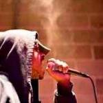"What if we created music that was catchy, mainstream but actually inspiring and made you think? That would be Revolushunary Strippa Musik." FTT supported a compilation CD, produced by Sharrieff Muhammad, of local socially conscious hip hop music and spoken word artists uncovering the gender sexism and street pimpism prevalent in mainstream hip hop music.
Roots and Rays Community Garden | 2010
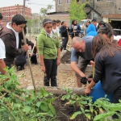Roots and Rays Community Garden in the Pilsen neighborhood will host a series of workshops led by the Help Increase the Peace Program (HIPP) integrating organic gardening philosophy with HIPP's conviction that nonviolence and participation in our communities can better each of us and our world. The workshops will wrap up with the students designing and painting a mural on-site highlighting the importance of growing healthy, non-violent communities.» Visit Website
Transformative Justice Law Project of Illinois (TJLP) | 2010
The Transformative Justice Law Project of Illinois (TJLP) provides free, holistic, life and gender-affirming criminal legal services to low income and street-based transgender and gender non-conforming people in Illinois. TJLP is facilitating the creation, printing, and distribution of a 'zine publication consisting of the art, poetry, survival tips, and creative writing of trans and gender non-conforming people who have been or are currently incarcerated.
» Visit WebsiteChicago Books to Women in Prison | 2006
The Chicago Books to Women in Prison Project uses Bound Struggles as a way to share incarcerated women's stories with people on the outside. FTT funded the edition "Alternatives to Criminal Justice Control" helping to further social change by inviting women in prison to contribute to an artistic outlet of expression to discuss resistance to and alternatives to the criminal justice system.
» Visit WebsiteActor Slash Model | 2007
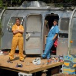FTT contributed to the making of a documentary film about the joys and positive creativity of a nationwide community of trans-identified musicians. Capturing material while performing, filming and conducting interviews on the road, ASM's film focuses on the successes and full lives of these artists and raise visibility of the multi-dimensionality of transgendered people who are often negatively portrayed in mainstream media.
» Visit WebsiteVenus | 2008
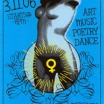VENUS Is a multimedia cultural celebration honoring the idea of making everyday International Women's Day. They organize a multi-racial women's circle and celebrate the lineage, impact and cultural influences of women via art, music, poetry, dance and craft.
» Visit WebsiteKuumba Lynx | 2006
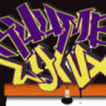FTT helped Kuumba Lynx kick off "Arts Explosion Day" to involve activism workshops and civic engagement discussions in collaboration with CAAAELII to focus on Immigrants Rights for youth.
» Visit WebsiteYellow Armbands | 2006
FTT funds were used to help organize in solidarity with transwomen by educating attendees of the Michigan Womyn's Music Festival about the benefits of inclusion, and to also encourage their participation and level of comfort at the festival.
» Visit WebsiteYellow Wing Productions: Fish Out of Water | 2007
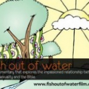FTT paid for local animators to create art for the documentary Fish out of Water, a local film that aims to challenge long-standing beliefs, shatter misconceptions, and ask crucial questions of pastors, theologians, the Institute of Religion in Democracy, politicians, and members of the LBGTQ community about their values and perceptions based on what religious texts say about homosexuality.
» Visit WebsiteWest Town Bikes | 2007
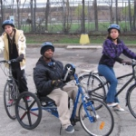FTT awarded a grant for "Youth Build A Bike" program that provided hands-on activities and education for youth around biking self-sufficiency. West Town Bikes is a community bicycle learning workshop often used as a creative workspace for special bicycle building, utilitarian human powered design, kinetic art, advocacy projects and constructive creation.
» Visit WebsiteBackstory Social Center | 2009 | Creative Justice
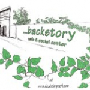Backstory is a cafe and social center in Woodlawn committed to creating a space that is accessible and appealing to a diverse population. FTT funds will help develop an expanded infoshop, which will allow more space for resource sharing and will enhance programming that highlights the importance of participatory media and knowledge creation. » Visit Website
Mixing It Up | 2008
FTT grant to support a follow up to Voices of Cabrini (1998), filmmakers Ronit Bezalel and Mark Pratt look at the impact of the destruction of Chicago's Cabrini Green public housing development a decade later in their latest film entitled, Mixing It Up. The film draws the connections between the loss of affordable housing in Chicago with the national trend to tear down high-rise public housing. The grant will support an educational outreach tour.
» Visit WebsiteProyecto Arte Jornalero | 2010
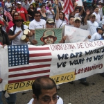Proyecto Arte Jornalero creates and exhibits art centered on immigration, labor, identity, and the work of day laborers by using art as a medium for transforming oppression into liberation, lifting the creative voices of low-income immigrant workers, and celebrating the distinct artistic, cultural, and personal backgrounds of Chicago's day laborer community.» Visit Website
Beyond Today | 2007
Beyond Today is a grassroots group of residents, a.k.a Riverbank Neighbors, committed to working together to promote environmentalism, social justice, and peace. Their grant was used to institute a youth environmental activism internship program at Waters elementary school in Ravenswood/Lincoln Square.
» Visit WebsiteApril 1968 Riot Oral History Project | 2008
FTT grant to support artist and educator Samuel Barnett's production of a multi-media project featuring interviews and photo documentation of those who witnessed and were impacted by the 1968 riot that erupted on the West side of Chicago after the murder of Dr. Martin Luther King. The work will be available for educational, research, and artistic exhibition purposes.
» Visit WebsiteNone on Record | 2006
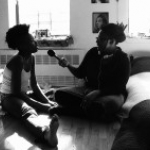FTT helped fund None on Record: Stories of Queer Africa, a sound documentary project that collects the stories of queer, lesbian, gay, bisexual and transgendered (QLGBT) Africans from the African Continent and the Diaspora. None on Record, now based in New York City, adds to the growing histories told by QLGBT Africans all over the world.
» Visit WebsiteFrom Admiration to Xenophobia: Memoirs of Chicago’s Arab Women | 2010
 From Admiration to Xenophobia: Memoirs of Chicago's Arab Women is a project of thirty Arab American and immigrant women participants of The Arab Women's Committee at the Arab American Action Network. They will use writing and drawing exercises to help bring the women out of themselves and tell their stories, provide tools for expression and a safe space to talk. A multimedia zine will be created to distribute the stories, which will be translated into English, around the city.» Visit Website
From Admiration to Xenophobia: Memoirs of Chicago's Arab Women is a project of thirty Arab American and immigrant women participants of The Arab Women's Committee at the Arab American Action Network. They will use writing and drawing exercises to help bring the women out of themselves and tell their stories, provide tools for expression and a safe space to talk. A multimedia zine will be created to distribute the stories, which will be translated into English, around the city.» Visit WebsiteYoung Women’s Empowerment Project | 2006
FTT supported a youth-led social justice campaign to learn about theories and practices of social justice in order to become better activists in the fight for justice for young women in the sex trade everywhere.
» Visit WebsiteRadio Populares | 2010
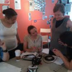Radio Populares, a Chicago-based collective that collaborates with communities struggling for social justice, will offer a series of four Making Waves Workshops around Chicago where participants will learn the basics of low power radio setup, production and transmitting. On the heels of legislation that expands low power radio options, these workshops will aim to demystify the media making process and utilize hands on, grassroots tools to jump start social change.
» Visit WebsiteNew School Poetics Press | 2010
New School Poetics Press is a publishing project of local, emerging youth writers who are creating a new hip hop literary genre in Chicago. Most of the books will be individual collections from emerging writers, many of whom are associated with Louder Than A Bomb: The Chicago Youth Poetry Festival. » Visit Website
ThickRoutes Performance Collage | 2006
FTT funded "Where Seeds Have Grown", an interdisciplinary dialogue-raising workshop series. Through creative writing, movement theater, text and music activities, the workshop process invited a group of diverse cross-race participants to collaborate and talk openly about experiences and conceptions of race, and the influence that the African Diaspora as had on their lives.
» Visit WebsiteKings of Poetry | 2006
FTT supported a Kings of Poetry workshop series designed for young men to explore notions of gender sensitivity and create "More Than Mothers," an anthology of essays and poems commemorating the lives of women.
National Boricua Human Rights Network: Crime Against Humanity | 2006
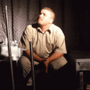FTT supported the production of "Crimes Against Humanity," a play about the lives of 11 ex-political Puerto Rican nationalists and their everyday experiences in prison before being released in 1999 after agreeing to clemency from President Clinton. The play helped to raise awareness about the independence of Puerto Rico and the freeing of the two remaining political prisoners Oscar Lopez Rivera and Carlos Alberto Torres.
» Visit WebsiteThe Chicago Wisdom Project | 2009 | Education
Chicago Wisdom Project empowers youth to create a more meaningful and compassionate culture through creativity by providing mentoring and the guidance of elders in pursuing their passion. This award will fund stipends that will cover the costs of the creative projects for five young people. » Visit Website
Gender JUST | 2009 | Visual Art
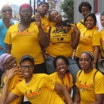Gender JUST (Justice United for Societal Transformation) is a local direct action organizing project of Queer, Trans and Gender-Non-Conforming (QTGNC) communities. Funding will be used to provide art supplies for Create for Justice, for which participants will create visual social justice art that expresses their commitment to racial, economic and gender justice. » Visit Website
re[public] in/decency/ | 2009 | Performance
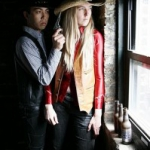re[public] in/decency, founded by Coman Poon and Erica Mott, is an inter-arts activist initiative and experiential think tank that explores the trans-national intersections between performance art, social justice activism and arts-informed pedagogy. The Biology as Biography Project is a creative collaboration with the Chicago and Evanston Armenian Diaspora community that includes a series of storytelling workshops and performances with members of the local Armenian community built around the broad notion of: "Invisible Stories."» Visit Website
PROYECTO LATINA | 2009 | Journalism/Literary
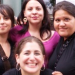PROYECTO Latina is a multi-media project that includes a live monthly reading series and a website that create a culture of self-empowerment. It spotlights emerging and established Latina talent, creates safe spaces for underserved Latina communities and provides a virtual platform to chronicle stories, share resources and start dialogue. Funds will be used to purchase video cameras for website interviews with Latina writers as well as the creation of chap books. » Visit Website
Anansi’s Web Youth Media Action Project | 2010
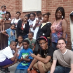Anansi's Web Youth Media Action Project / Central District Organizing Project utilizes arts, history and technology to help raise freshman and sophomores political consciousness and understanding of social justice movements at Roosevelt High School in Gary, IN.. Through "Mate Masie: What's Real, Through Film ," youth will use documentary film to chronicle their everyday lives, conduct video interviews of their peers, and lead a youth web/media action program and social justice education workshops in Gary, IN.» Visit Website
Connect Force | 2010
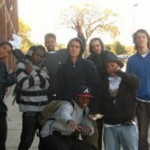Connect Force is an after-school and summer HipHop program of Alternatives, Inc. in Uptown, Chicago that has been providing academic support, life-skills workshops, community service projects, and HipHop elemental mentorship towards social justice activism since 2003. Funds will be used to pay three youth stipends to help plan the year-end talent show, which will showcase Uptown Youth's HipHop skills as well as provide a space for youth to voice their own socio-political feelings and opinions.» Visit Website
Mothers of Incarcerated Sons (M.I.S.S.) | 2008
FTT supported writing workshops for mothers of incarcerated sons held at the Howard Area Community Center in Rogers Park. The workshops help mothers understand they are not to blame; that their guilt is propagated by a constructed societal viewpoint that can be changed. The grant will also provide fiscal support for the publication of their bi-annual manuscript.
AREA Chicago | 2008
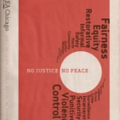Revealing examples of Chicagoans tackling the question of money, capital and work in creative ways. AREA Art/Research/Education/Activism is a publication and event series dedicated to researching, supporting and networking local social, political and cultural movements.
Funny, You Don’t Look Like a Jew | 2008
FTT funded the forthcoming multi-media art installation by Sam Feder that will explore the connections between, and opens dialogue amongst, Queer Radical Jews and Zionist Jews who are organizing around racial, economic, and social justice.
» Visit WebsiteAgainst A Trans Narrative | 2008
FTT grant to support DVD duplication and dissemination of "against a trans narrative", an experimental film about trans issues by Jules Rosskam. The film analyzes the construction of the dominant trans-masculine "narrative." It aims to provoke conversation among the LBGTQ community and others about ways in which we construct personal and historical narratives.
» Visit WebsiteChicago Independent Radio Project | 2007
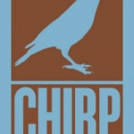FTT gave a grant to CHIRP to secure a broadcast license for a new community radio station in Chicago committed to local, independent programming, and to further the causes of localism, diversity, and independence in broadcasting, more generally. The group is also working to convince Congress and the FCC to remove existing barriers to the granting of low power FM radio licenses in urban areas, including Chicago.
» Visit WebsiteA Day at Stateville | 2008 | Theater
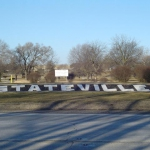FTT grant to support a play written by the men at Statesville, a maximum security prison, through a public speaking and writing class taught by Jim Chapman of the Illinois Institute for Community Law and Affairs. Ex-prisoners will perform and compose the music for the play. It will tour at community groups, businesses, religious organizations, and schools across the city.
Teens Acting in Community (TAIC) | 2008
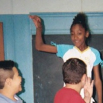TAIC teaches poetry, prose, art, theatre and spoken word based on a student-centered approach in Riverdale, IL. Students conduct open mic readings and engage in community service. Their original performances open up dialogue between the teen's family, friends and neighbors about issues impacting their community.
» Visit WebsiteSan Lucas Workers Center: “Discrimination – Never Okay†Video Project | 2007
The San Lucas Workers Center is a worker-members and worker-led grassroots group in Chicago. FTT funded the "Discrimination - Never Okay" video project which focused on young African-American day labor agency workers, who make up 20% of the day labor/temp population in Chicago.
Chicago County Fair/Coming Home Chicago | 2007
FTT made a grant for a photo series called "Sex Offender Coming Home." Each set in the series will illustrate a sex offender returning home and being welcomed back into the community after spending time in prison. The photographs will invite the viewer to think about an interesting hypothetical situation: to imagine what it would be like if Sex Offenders (SOs) were welcomed back into society and supported in building a new life.
Still Point Theater Collective | 2009
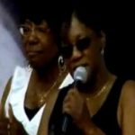Still Point Theatre Collective will facilitate a new theatre project with a group of formerly incarcerated women called Matters of the Heart. The woman of Matters of the Heart will put together an educational performance/presentation to tour around Chicago, specifically for youth, on ways to break free from the cycle of violence that many of youth live within. The Fire This Time Fund award will pay the cost of stipends for the ten Cluster of Roses participants. » Visit Website
Pilsen Environemental Rights and Reform Organization (PERRO) | 2008
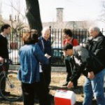PERRO educates Pilsen area youth about environmental issues affecting their own neighborhood by having them creatively document local sources of pollution. The youth's work will be presented in local schools and the community.
» Visit WebsiteCo-op Image Group | 2006
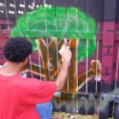Youth throughout the community are given access to audio technology to create sound projects about life through their words. FTT helped support two young artists lead an after-school audio program at the Corner Art Center as well as traverse the city with portable audio equipment.
» Visit WebsiteArte y Realidad | 2008
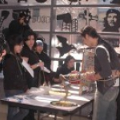FTT made a grant to Art y Realidad, a collective that hosts street side talleres (art workshops) to share the cultural practice of "artesania" - crafts made with your hands - to adults and children in the Little Village community.
» Visit WebsiteAcudetox Healing Collective | 2008
Acudetox Healing Collective is a group of community health workers, activists, and organizers who believe that accessible health care is a form of social justice, and believe that in taking care of our communities we often forget to prioritize our own wellbeing. AHC believes that investing in the health of our people can only strengthen any movement for social justice.
Death Row Shuffle Tour | 2007
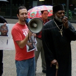FTT awarded a grant for Death Row Shuffle Tour a.k.a Darby Tillis, blues gospel singer, composer, mean harmonica player, and Illinois' first exonerated death row prisoner. The Death Row Shuffle Tour brought Darby and organizers from the Campaign to End the Death Penalty to high schools and youth groups in communities affected by the criminal justice system.
» Visit WebsiteI Met A Man in Jenin | 2010
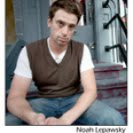"I Met a Man in Jenin" is one Jewish-American man's solo show of stories told of working in Palestine with non-violent peace activists in 2005. The message Noah Lepawsky got from Palestinians: "Tell people back home what you saw in the West Bank" encouraged him to partner with local Palestinian solidarity groups to create a cultural space - one that he hopes will ensue honest dialogue with people who might not normally listen to what Palestinians are saying or doing about the occupation.
Half Letter Press | 2009 | Literary
This project is a collaborative effort between Half Letter Press/Temporary Services and Mary Patten. Funds will be used to publish a book excavating the political practice and visual propaganda of the Madame Binh Graphics Collective, a women's poster, printmaking, and street art collective based in New York City between 1975 and 1983 that fought racism and acted in solidarity with anti-colonial movements. » Visit Website
Blueprint for Bronzeville | 2010
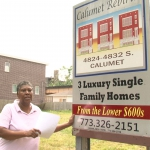Blueprint for Bronzeville follows an ordinary group of people who are demanding a voice in the future of their historic African American neighborhood, marked by thousands of empty lots. This short documentary film explores personal stories and struggles and the work of the citizen-activist group Housing Bronzeville, as it fights to create opportunities for affordable home ownership and revitalize the community.» Visit Website
Son de Las Barricadas: Art and Resistance in Oaxaca, Mexico | 2007
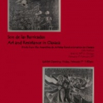FTT awarded ChicagOtra a grant to support a series of three expositions of art from the Oaxacan social movement that generated public awareness and created a space for an ongoing dialogue about government accountability and popular movements for justice. ChicagOtra is a collective of activists and organizers dedicated to promoting the Zapatista ideals of democracy, autonomy, and social and economic justice in Chicago.
» Visit WebsiteChicago, Transplanted | 2010
Chicago, Transplanted (tentative title) is a collective video effort to tell the stories of Chicago transplants living on the southeast side of Iowa City, Iowa, and in exploring the effect of affordable housing on the lives it touches in these communities. Chicago,Transplanted will gather personal accounts through interviews and generate new works to be shown at collaborative, multimedia presentations in Chicago as well as Iowa City.
A Long Walk Home, Inc. | 2009 | Creative Justice
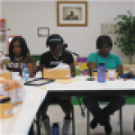The Girl/Friends summer institute is a three-week long comprehensive sexual health and sexual assault awareness and prevention program. Multi-media/multidisciplinary arts and sexual health education will be used in order to train African American and Latino adolescent girls from the North Lawndale Charter Preparatory High School to become peer leaders in their school and the greater North Lawndale community. Funds will be used for the Community Summer Showcase performance and exhibition at the Murphy-Hill Gallery. » Visit Website
Cabrini Green Chapter of the Hip Hop Congress | 2007
FTT awarded a grant to the Chicago chapter of Hip Hop Congress to work with young male teens of Cabrini Green to create a half-hour DVD to address and raise awareness about the issue of violence in Cabrini Green.
» Visit WebsiteShannon Heffernan Audio Project | 2009 | Audio
This project is a true democratization of media by facilitating collaborations between professional media makers and people who often do not have access to the technology, skill sets, and time needed to participate in the new media landscape. A series of audio reports on families and prison will be made using collaborative documentary, where the impacted individual is given control over telling their own stories. Fund will support five stipends for the people sharing their stories.
Female Storytellers Initiating Revolution to End Violence (F.I.R.E) | 2006
A Southside multiracial, intergenerational group of women and girls created Storyteller, a publication of survivor stories of violence, and the stories of people who have done something to end violence in their daily lives.
Teen Living Programs | 2006
FTT supported the production of a message-oriented record made by one of Teen Living Programs' youth. The goal of the CD was tto inspire youth to find more motivation in attending school, build healthier relationships, and talk about what is going on in their lives.
» Visit WebsiteChicago Books to Women in Prison | 2009 | Film/Video
Chicago Books to Women in Prison operates a steady and growing all-volunteer collective working to distribute books free of charge to people in women's prisons nationwide. Funds will be used to produce a video showcasing what Chicago Books to Women in Prison does and how they continue to strive towards prisoner solidarity. » Visit Website
Kuumba Lynx Braid Tails | 2008
Kuumba Lynx is an Arts and Education Organization founded in 1996 with the a mission of working to provide access to programs that preserve, promote and present urban arts & culture. FTT grant supported the production of the group's first ensemble CD of poetry and rhyme entitled "Braid Tales." The compilation CD will be used as a tool to spawn dialogue about the harsh economic and societal realities that affect inner city youth in classrooms and as arts integration curricula.
JUSTFM Entertainment | 2009 | Film/Video
Up Against the Wall is a project of JUSTFM Entertainment, an organization that provides artistic, educational, cultural and health programs for young people and their families, which serve as an outlet for self-expression and community building. The project is a reality-based documentary series that follows the daily grind of the Chicago native recording artist Just Flo, Uneq'ka and her crew the Urban Angels. » Visit Website
Stillpoint Theatre Collective | 2006
Sisters Rising is a group of formally incarcerated women who have built community through participating in theatre/improvisation games and creative writing workshops. Their FTT grant allowed them to continue participating in theater workshops and sharing and writing each others' stories.
» Visit WebsitePiñata Factory | 2010
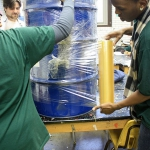Piñata Factory is an ongoing collaboration between Mike Bancroft, Bert Stabler ,and the young people with whom they work. "Brownfield Towers" is a single-site installation of fourteen translucent shapes cast in packing tape from 55-gallon drums, arranged in a pyramid and adorned with stuffed fabric innards, ceramic bones, and plaster hands, and lit from within by solar-powered LEDs. The piece is to be placed on a site in southeast Chicago as a monument to the deindustrialization of that area that left behind acres of toxic earth known as "brownfields." » Visit Website
The Crib Collective | 2006
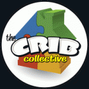FTT helped support youth leaders of "The Movement" facilitate collaboration across the cultural gap of segregated North and South Lawndale neighborhoods through dialog, art and in making the
"Voices Across Borders" community album.
Proletariat Productions | 2006
FTT supported a music performance, art exhibit and panel discussion (in the round - modeled after Camp Democracy) to grapple with understanding the relationship between socially conscious art and politically conscious movements.
» Visit WebsiteEl Stitch y Bitch | 2010
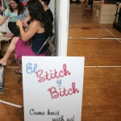El Stitch y Bitch is a lively community of knitters, crocheters and crafters that get together in Chicago's Pilsen, Bridgeport and Little Village neighborhoods. By providing new members with beginner's tool kits, which FTTF has funded, these women are teaching each other how to knit or crochet and empowering each other with a new skill that they can use to sell at a craft fair or simply make as gifts for friends and family members. » Visit Website
AREA Chicago Art/Education/Activism Publication | 2006
FTT helped produce AREA Issue #4 "No Justice, No Peace" about the criminal justice system, challenging mass incarceration, and redefining justice.
» Visit WebsiteAfrican Textile Magazine | 2006
Students from Bowen (B.E.S.T) High School took part in a creative research and self-publishing project to compile, lay out, assemble, and distribute magazines based on textile traditions and experiments in the African Diaspora. Students learned about abstract and narrative traditions in African-American quilting, and about technical and design traditions that gave way to appreciating the visual work of their ancestors and their contemporaries working in the 21st Century.